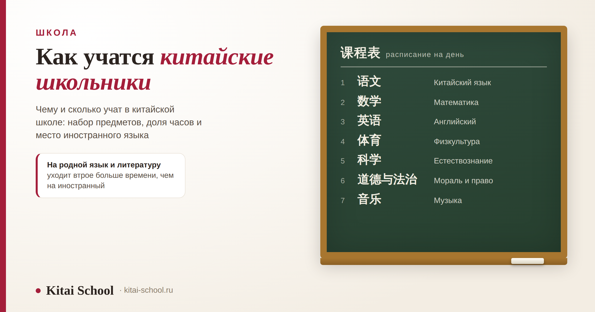
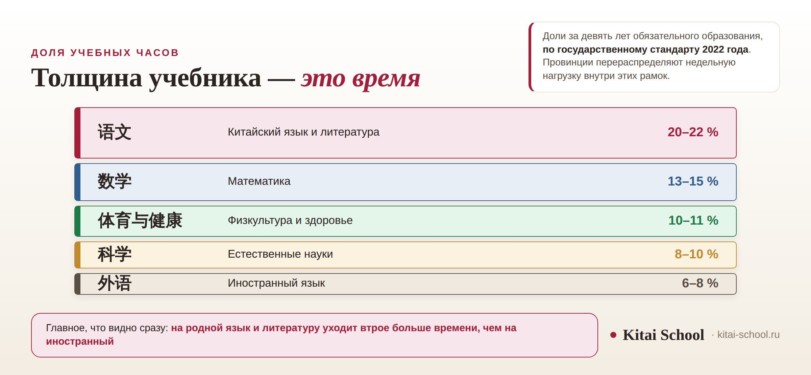

Школа
Как учатся китайские школьники: предметы, языки, учебный год и нагрузка по неделям


Про китайскую школу чаще всего спрашивают, сколько в ней классов и что такое гаокао. Но у этих вопросов есть ответы, а вот чему и сколько там учат, в русскоязычных источниках почти не разбирают — и зря, потому что именно здесь начинаются настоящие отличия. Набор предметов в китайской школе узнаваемый, а вот распределение времени между ними устроено не так, как ожидает российский читатель. Разберём: сколько часов уходит на каждый предмет, когда начинается иностранный язык, во сколько лет берут в первый класс и как устроен учебный год.
Родной язык и литература — 20–22 % всех часов, иностранный — 6–8 %. Иностранный начинается с третьего класса. В первый класс берут с шести полных лет, в части местностей можно с семи. Нагрузка задана в часах за год: 910 в младших классах, 1050 с третьего, 9522 за девять лет. Единых дат каникул нет: зимние сдвигаются вслед за лунным Новым годом.
Что здесь есть и чего здесь нет
Сразу разведу вопросы, чтобы вы не искали здесь того, чего в статье нет.
- Про ступени и экзамены — сколько лет длится каждая ступень, чем заканчивается девятый класс и как устроен выпускной экзамен — у нас есть отдельный разбор: факты о китайских школах. Там же про распорядок дня и гимнастику для глаз.
- Про оценки и баллы — как считают результат и что значат проходные пороги — тоже отдельный материал, и здесь я к ним не возвращаюсь.
- Про путь после девятого класса, если дорога идёт не в старшую школу: есть ли в Китае колледжи.
- Про дошкольное, то есть что происходит до первого класса: детские сады в Китае.
А здесь — содержание: предметы, часы, языки, возраст приёма и календарь. То, что видит ребёнок, когда садится за парту.
Во сколько лет идут в первый класс
Возраст приёма задан законом об обязательном образовании, и формулировка там точная: ребёнка, которому исполнилось шесть полных лет, родители обязаны отдать в школу. Там же сделана оговорка: в местностях, где условий недостаточно, срок можно отодвинуть до семи лет.
«Шесть полных лет» разъясняется так: шесть должно исполниться до начала нового учебного года, то есть к 1 сентября. На практике отсечкой служит 31 августа, и дети, родившиеся в начале сентября, идут в школу почти на год позже сверстников.
Вторая важная вещь, которая удивляет приезжих: в школу принимают без вступительных испытаний, а местные власти обязаны обеспечить место в школе поблизости от места регистрации. То есть выбор школы в обязательном образовании привязан к тому, где семья прописана, а не к результатам ребёнка.
Какие предметы изучают и сколько им отводят
Набор предметов никаких сюрпризов не содержит. Сюрприз в том, сколько времени на них отводится.
| Предмет | Что это | Доля часов | Чем примечателен |
|---|---|---|---|
| 语文 | Китайский язык и литература | 20–22 % | в редакции 2011 года было 13–15 %: доля выросла заметно |
| 数学 | Математика | 13–15 % | второй предмет по объёму часов |
| 体育与健康 | Физкультура и здоровье | 10–11 % | в 1–2 классах четыре урока в неделю, в 3–6 классах три |
| 科学 | Естественные науки | 8–10 % | по доле часов обходит иностранный язык |
| 外语 | Иностранный язык | 6–8 % | начинается с третьего класса, упор на слух и речь |

Вот эта строчка и есть главное: на родной язык уходит примерно втрое больше времени, чем на иностранный, и вдвое больше, чем на математику. Для российского читателя соотношение непривычное: у нас на иностранный в школе обычно отводится заметно больше.
Кроме перечисленного, в обязательном образовании есть мораль и право, музыка и изобразительное искусство, а с 2022 года отдельным предметом идёт трудовое воспитание — не меньше одного урока в неделю с первого по девятый класс. Эта формулировка взята из провинциального порядка исполнения, то есть детализация на местах своя.
Какие языки изучают в школе
Языков в расписании два, и путать их не стоит, потому что это совершенно разные предметы.
语文 — родной язык и литература. Это не «китайский как иностранный», а предмет уровня нашего русского языка вместе с литературой: сочинения, разбор текстов, заучивание наизусть, классика. Именно он занимает больше всего часов в расписании.
外语 — иностранный язык, чаще всего английский. Он начинается с третьего класса начальной школы, и в младших классах упор делается на слушание и говорение, а не на грамматику.
Семья переехала в Китай, подростка отдали в обычную школу. Родители заранее переживали за математику: думали, что программа окажется неподъёмной.
Математику он догнал за семестр — язык формул везде одинаковый, и задачу можно понять, даже не разобрав условие до последнего слова.
Тяжелее всего оказался 语文. Не разговорный китайский, который у него был вполне приличный, а школьный предмет: сочинения, заучивание наизусть, разбор классических текстов, которые и носителям даются не сразу.
Отставание по нему держалось дольше всего. «Знает китайский» и «тянет китайский как школьный предмет» — разные вещи, и родителям, которые планируют переезд, это стоит понимать заранее.
Разница между этими двумя предметами объясняет и частую родительскую ошибку. Ребёнок, свободно болтающий по-китайски, легко проходит собеседование и бытовые ситуации — а потом не тянет 语文, потому что там требуется не речь, а работа с текстом: пересказ, цитирование, разбор незнакомой лексики из классики. Подтянуть это репетитором по разговорному языку не получается: нужен человек, который работает именно со школьной программой.
И третья языковая линия, которой в расписании нет, но которая работает постоянно: обучение ведётся на путунхуа. Для части детей это не тот язык, на котором говорят дома, — региональные варианты речи различаются сильно. Как устроена эта картина, разобрано отдельно: как разговаривают в Китае.
Если вы думаете о том, чтобы ребёнок начал китайский заранее, до переезда или до школы, порядок и возрастные ориентиры разобраны здесь: китайский язык для детей.
Сколько уроков в неделю и за девять лет
Стандарт задаёт нагрузку не в уроках, а в годовых часах — и это удобнее, чем кажется, потому что позволяет сравнивать ступени между собой.
| Ступень | Сколько | Примечание |
|---|---|---|
| 1–2 классы | 910 учебных часов в год | нагрузка самая лёгкая из всей школы |
| 3–6 классы | 1050 часов в год | прибавка приходится в том числе на иностранный язык |
| Все девять лет | 9522 часа | суммарно за обязательное образование |
Как разложить эти часы по неделям, решают провинции. Для примера: в одном из провинциальных порядков исполнения это 26 уроков в неделю в первом и втором классах и 30 — с третьего по шестой. В другой провинции цифры будут другими, и это нормально: общенациональной сетки расписания не существует.
Как устроен учебный год
Учебный год делится на два семестра. Осенний начинается 1 сентября — тут всё привычно. А дальше начинается то, к чему приезжие семьи обычно оказываются не готовы.
Зимние каникулы привязаны к Новому году по лунному календарю, а он каждый год приходится на разные даты — от конца января до середины февраля. Вслед за ним едут и каникулы, и начало весеннего семестра, и даже начало лета: если праздник поздний, весенний семестр сжимается, а летние каникулы выходят длиннее.
Единого календаря по стране нет: конкретные даты устанавливают региональные управления образования. Разброс между провинциями доходит до нескольких недель, поэтому любые «точные даты каникул в Китае» — это даты какого-то одного города.
Что различается от региона к региону
Это, пожалуй, главное, что стоит унести из статьи: единый в Китае только стандарт, а не практика.
- Недельная нагрузка. Доли часов заданы на уровне страны, расписание — на уровне провинции.
- Даты каникул и семестров. Устанавливаются регионально, разброс до нескольких недель.
- Порядок приёма в первый класс. Общий принцип — по месту регистрации и без экзаменов, детали различаются.
- Возрастная отсечка. Закон допускает отсрочку, а трактовки на местах разные.
Отсюда практический совет тем, кто планирует переезд. Проверять нужно три вещи, и все три — на месте: с какого возраста в этом городе принимают в первый класс, к какой школе относится ваш адрес и какие даты каникул утверждены на текущий учебный год. Первые два пункта решают, пойдёт ли ребёнок в школу в этом году вообще, третий — когда вам планировать поездки.
Отдельно про типы школ. Они есть — государственные, частные и школы для детей иностранцев, — но правила приёма в них задаются на местах, и проверенных обобщений по различиям между ними у меня нет. Поэтому честный ответ такой: конкретные условия нужно смотреть в управлении образования того города, куда вы собираетесь, а не в общих статьях про Китай.
Если ребёнку предстоит учиться в Китае, язык лучше начинать не с переезда, а раньше: разговорный уровень снимает половину трудностей первого года. Мы занимаемся с детьми по возрастным программам — китайский для детей. Оставить заявку или написать в Telegram.
Частые вопросы (FAQ)
Как учатся дети в Китае в школе — чем это отличается от нашей школы?
Набор предметов узнаваемый: родной язык, математика, иностранный, естественные науки, физкультура, музыка, изобразительное искусство. Отличается распределение времени. По государственному стандарту 2022 года на родной язык и литературу отводится 20–22 % всех часов — вдвое больше, чем на математику, и примерно втрое больше, чем на иностранный язык. Ещё одно отличие — единый учебный план: доли часов заданы на уровне страны, а школы и провинции распределяют нагрузку внутри этих рамок.
Во сколько лет дети идут в школу в Китае?
По закону об обязательном образовании ребёнка отдают в школу, когда ему исполнилось шесть полных лет; в местностях, где условий недостаточно, срок можно отодвинуть до семи. Шесть лет должны исполниться до начала учебного года, то есть к 1 сентября, — на практике отсечкой служит 31 августа. Трактовки на местах при этом расходятся, в части регионов требования смягчены, так что единого правила «строго с шести» нет.
Какие предметы изучают в китайских школах?
В обязательном образовании это 语文 (китайский язык и литература), 数学 (математика), 外语 (иностранный язык), 科学 (естественные науки), 体育与健康 (физкультура и здоровье), 道德与法治 (мораль и право), музыка и изобразительное искусство. Отдельным предметом с 2022 года идёт трудовое воспитание — не меньше одного урока в неделю с первого по девятый класс.
Какие языки изучают в китайских школах?
Два: родной и иностранный. Родной — это 语文, предмет уровня нашей литературы вместе с русским языком, и он занимает больше всего часов. Иностранный обычно английский, начинается с третьего класса начальной школы, и в начальной школе упор делается на слушание и говорение. Само обучение при этом ведётся на путунхуа, даже если дома в семье говорят на местном варианте речи.
Сколько уроков в неделю у китайских школьников?
Стандарт задаёт не уроки, а годовые часы: 910 в первом и втором классах, 1050 с третьего по шестой, и 9522 часа за все девять лет обязательного образования. Как разложить это по неделям, решают провинции. Для примера, в одном из провинциальных порядков исполнения это 26 уроков в неделю в 1–2 классах и 30 — в 3–6.
Когда у китайских школьников каникулы?
Учебный год делится на два семестра: осенний начинается 1 сентября, весенний — после зимних каникул. Главная особенность в том, что зимние каникулы привязаны к Новому году по лунному календарю и потому каждый год сдвигаются, а вместе с ними едут и даты весеннего семестра, и начало лета. Единых дат по стране нет: их устанавливают региональные управления образования, и разброс между провинциями доходит до нескольких недель.
Хорошей учёбы! 好好学习！
Источники
- Возраст приёма приведён по закону об обязательном образовании: статья 11 обязывает родителей отдать в школу ребёнка, которому исполнилось шесть полных лет, и допускает отсрочку до семи лет в местностях, где условий недостаточно; разъяснение ведомства уточняет, что шесть лет должны исполниться к началу учебного года, то есть к 1 сентября. Статья 12 закрепляет приём без вступительных испытаний и обязанность местных властей обеспечить место в школе поблизости от места регистрации.
- Оговорка: трактовки возрастной нормы на местах расходятся, в части регионов требования смягчены; единого правила «строго с шести» нет.
- Доли учебных часов приведены по государственному стандарту общего образования 2022 года: 语文 — 20–22 % (в редакции 2011 года 13–15 %), 数学 — 13–15 %, 体育与健康 — 10–11 % (четыре урока в неделю в 1–2 классах, три в 3–6), 科学 — 8–10 %, 外语 — 6–8 % с началом в третьем классе и упором на слушание и говорение.
- Учебная нагрузка: 910 часов в 1–2 классах, 1050 в 3–6, 9522 часа за девять лет обязательного образования. Пример недельной раскладки (26 и 30 уроков) взят из провинциального порядка исполнения; в других провинциях он свой.
- Трудовое воспитание как самостоятельный предмет с одним уроком в неделю с 1 по 9 класс — формулировка из провинциального документа, а не из общенационального текста, и в статье она подана именно так.
- Учебный год: осенний семестр с 1 сентября, весенний после зимних каникул, привязанных к Новому году по лунному календарю; конкретные даты устанавливают региональные управления образования, разброс между провинциями доходит до нескольких недель.
- Чего в статье нет намеренно: ступеней и выпускных экзаменов, баллов и шкал оценивания, подробного разбора типов школ. Первые два разобраны в отдельных материалах блога, по третьему проверенных обобщений у меня нет.
- Оценки «уровня образования в Китае» в статье тоже нет: это суждение, а не факт, и подтвердить его данными я не могу.
- Практика Kitai School: работа с семьями, которые переезжают в Китай, и с детьми, поступающими в китайские школы.